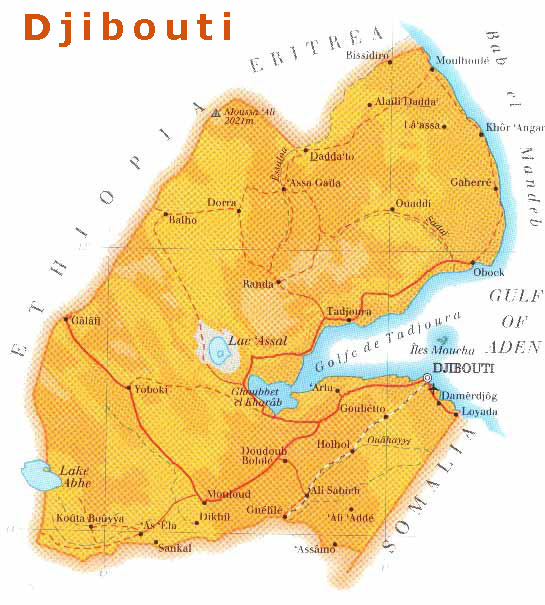

HISTÓRIA DE DJIBOUTI
No ano de 1862, um dos sultanatos da costa somaliana, Tadjoura, vendeu aos franceses o porto de Obock e as terras adjacentes por 52 mil francos. Trinta e seis anos depois, o sultanato de Tadjoura não existia mais e, sobre o golfo do mesmo nome, Djibouti se tornava a capital de uma colônia francesa chama Costa dos Somalis, depois conhecida como Território dos Afars e Issas. A França implementou medidas extremas de segurança e o enclave foi transformado em uma espécie de campo de concentração, com todas as suas fronteiras eletrificadas e mais de 20.000 efetivos militares. A independência e a reunificação da Somália estimularam o desenvolvimento dos movimentos anticoloniais, como a Frente de Liberação da Costa dos Somalis e a Liga Africana pela Independência. Esses movimentos desenvolveram tanto a forma de luta armada quanto a da política legal. A intensificação da resistência na década de 1970 forçou o governador interino Ali Aref a renunciar. No dia 8 de maio do ano de 1977, a França convocou um plebiscito no qual 85% da população se pronunciou a favor da independência. O principal dirigente da Liga Africana pela Independência, Hassan Gouled Aptidon, tornou-se o primeiro presidente da jovem república. Gouled se esforçou para superar a tradicional divisão étnica e constituir um governo multirracional, com vários ministros de origem afar. Na mesma época, ainda que o francês continuasse a ser a língua oficial, Djibouti foi aceito como membro da Liga Árabe, que tem contribuído de maneira generosa para recuperar a economia local. Criado artificialmente pelo colonialismo, que se baseou em razões estratégicas, o novo Estado depende de seu porto como principal recurso. Através dele, a Etiópia canaliza grande parte de seu comércio exterior.  Os dois vizinhos de Djibouti, Somália e Etiópia, têm pretensões sobre partes de seu território. O interessa da Etiópia é fundamentalmente geopolítico. Na hipótese de os nacionalistas da Eritreia conquistarem a independência, a Etiópia ficaria sem saída para o mar. Caso a Etiópia não conseguisse um acordo com a Eritreia para utilizar seus portos, Djibouti seria a única alternativa possível. Para a Somália, a questão é sobretudo uma reivindicação histórica, coerente com sua aspiração de reunificar a nação somaliana. Em meados do ano de 1979, o presidente Hassan Gouled assinou com a Etiópia e a Somália acordos comerciais e de transportes. A participação da etnia afar no governo e no novo exército foi estimulada, como forma de alcançar a unidade nacional. O partido do governo foi reorganizado e foram criadas administrações municipais, para estimular a participação política. A ajuda externa é destinada fundamentalmente a obra de irrigação e à melhoria da situação dos refugiados da guerra de Ogaden. O governo de Gouled recebe ajuda da Arábia Saudita, Kuait, Iraque e Líbia. Gouled tem sabido defender com habilidade os interesses de seu país, cuja única riqueza é a sua posição estratégica na saída do mar vermelho. Ao completar oito anos de existência como país independente, Djibouti reafirmou sua decisão de seguir seu próprio caminho, contrariando aqueles que esperavam uma incorporação rápida à Etiópia ou à Somália. No entanto, apesar dos sucessos diplomáticos, Gouled continua enfrentando problemas internos. O mais sério deles ainda é a divisão do país entre as etnias afar e issas. O afars representavam 35% da população, se queixavam da discriminação política e econômica. Já os issas, ocupam os postos-chaves do governo, negam as acusações de tribalismo e apoiam as medidas de força de Gouled para neutralizar a oposição. Depois da eliminação do Movimento de Libertação Populacional, em 1979, os afars tentaram se reorganizar em 1981 através do Partido Popular de Djibouti, o qual também foi proscrito. Em outubro do mesmo ano, o presidente Gouled impôs uma mudança constitucional para introduzir o sistema de partido único. A agrupação Popular para o Progresso, então no governo, passou a ser o único partido legal. Todos os demais partidos perderam seu registro oficial, sob o argumento de que eram partidos de base racial ou religiosa e, portanto, potencialmente perigosos para a unidade nacional. No ano de 1983, foram estabelecidas as bases de um projeto para transformar de maneira radical a economia de Djibouti, convertendo o país em uma espécie de Hong Kong do Oriente Médio. O plano previa a oferta de facilidades para converter o país em um centro financeiro, com o porto como zona franca comercial. Seis bancos estrangeiros se instalaram em Djibouti. O principal atrativo foi a existência de uma moeda forte, sustentada por depósitos em dólares nos Estados Unidos.